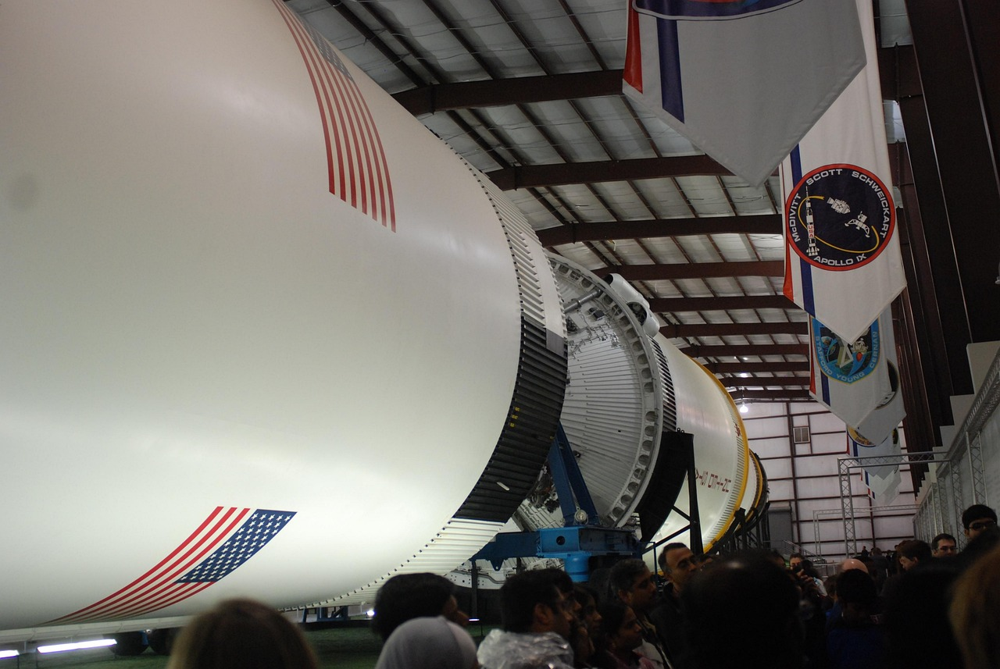

Introduction
Vue d'ensemble du voyage, dates clés et informations essentielles.
Ce guide a été spécialement conçu pour votre séjour à Houston du 14 au 24 avril 2025, incluant votre participation au FIRST Championship. Il combine clarté visuelle, informations essentielles et conseils pratiques pour une expérience optimale.

Vue d'ensemble du voyage, dates clés et informations essentielles.
Journée 20 avril: Exploration spatiale et divertissement en bord de mer.
Journée 21 avril: Aventure shopping dans le plus grand outlet de Houston.
Informations pratiques sur les transports, contacts d'urgence et conseils de sécurité.
Recommandations de restaurants par catégorie et conseils culinaires.
Journées 16-19 avril: Guide complet de l'événement robotique mondial.
Journée 22 avril: Exploration des musées de renommée mondiale de Houston.

Journée 23 avril: Découverte de la faune et de la flore dans un cadre magnifique.

Explorez tous les points d'intérêt de Houston sur une carte interactive.

Découvrez nos itinéraires jour par jour pour explorer Houston efficacement.
Plans détaillés, options de transport et itinéraires.
Liste complète des numéros d'urgence et services médicaux.
Analyse détaillée des centres commerciaux et outlets.
Informations sur l'excursion gratuite à Istanbul lors de votre escale.
Découverte des quartiers, spécialités culinaires et boutiques uniques de Houston.